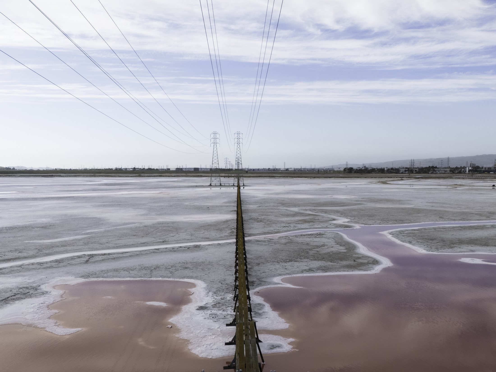
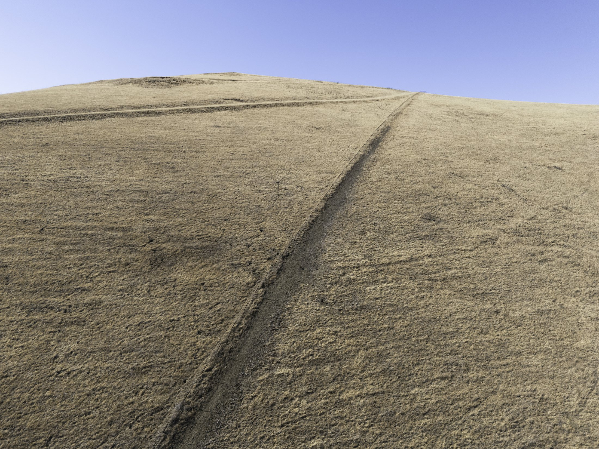
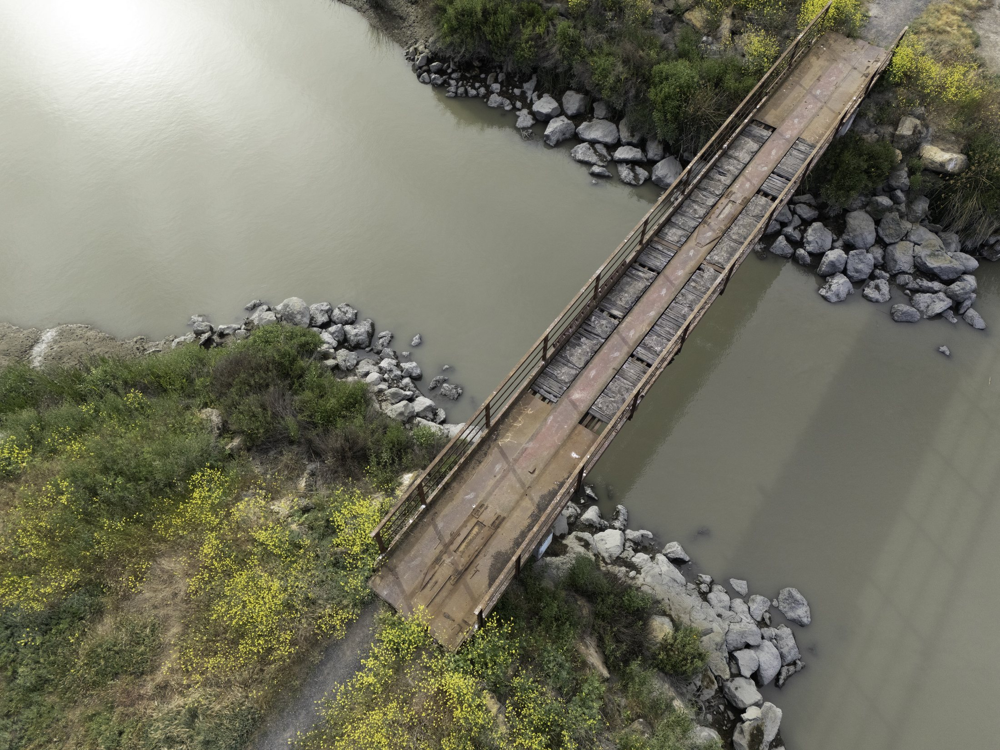
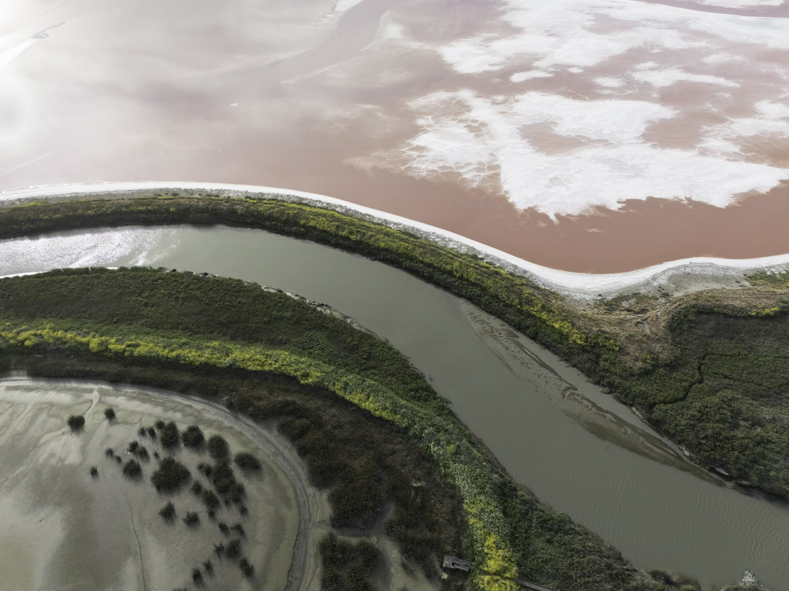
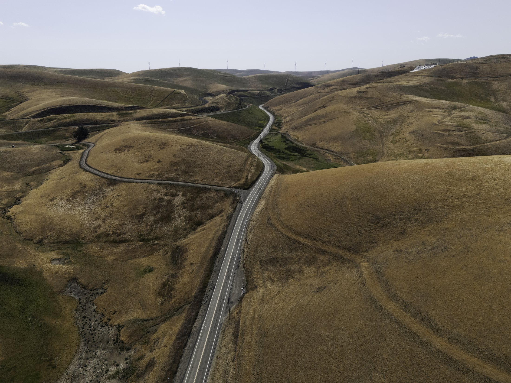
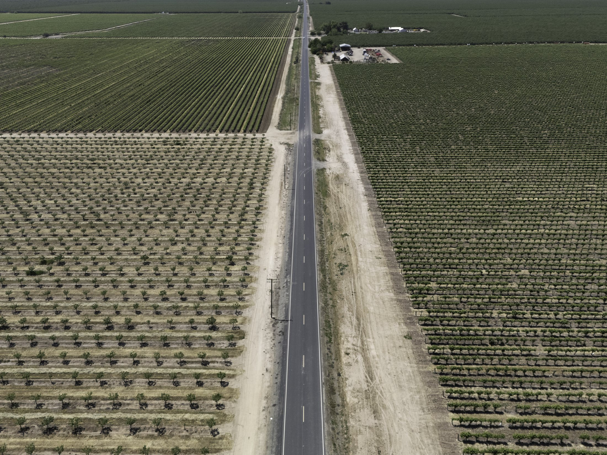

I photograph to document. To take a space, person, or moment so near and dear to my heart and freeze it in time. To visit the same location a mere month apart, only for the landscape to become unrecognisable—swept away under a low tide or shrivelled up in the sun. All is ever changing, shifting, moving. Every summer, I return to a new home, a city remapped, torn down, and rebuilt like it never was. I return to streets unrecognisable and the strangeness of becoming foreign.

The snap of a shutter, a brief freezing of time, to me is an ode to letting go. To acknowledge the moment as it is with slow intentionality and become familiar with its every corner. Nevertheless, our pathways through the world leave their mark, their presence most stark in landscapes where we are foreign. The roads wind and grass flattens during our journeys forward, and while I cannot be home to document its different shapes and forms, I bear witness to the home I built here and all that we do to get from A to B—anything to move forward. I sit with all that is strange to me and allow it to tell its own story of paths tread, leaving cracks in their wake and rust along the rails.




